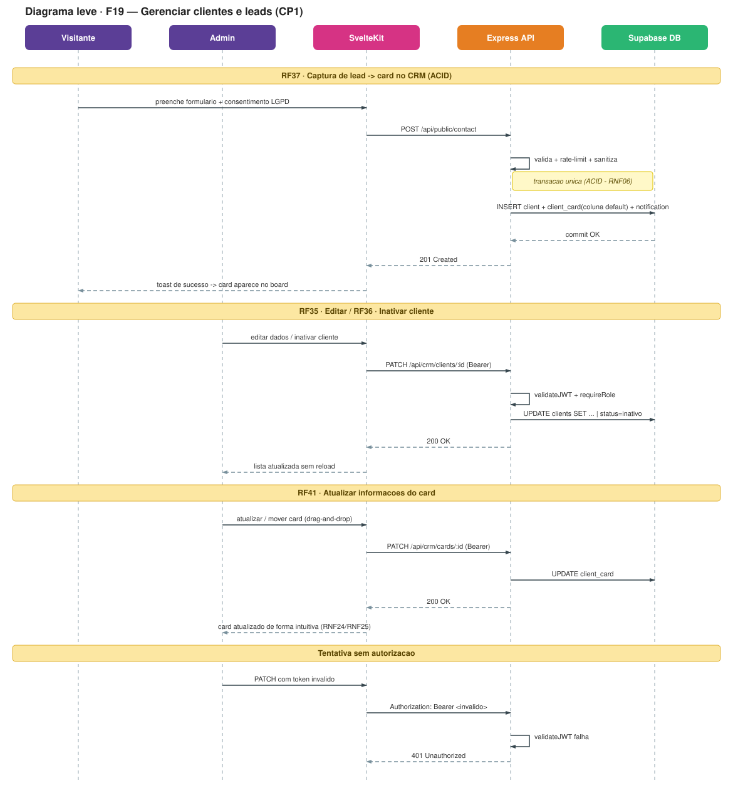
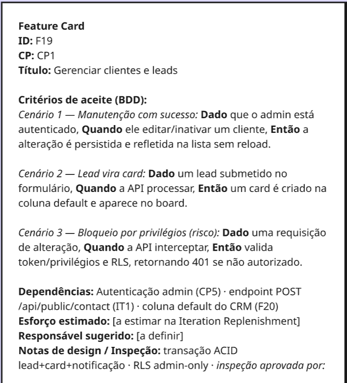
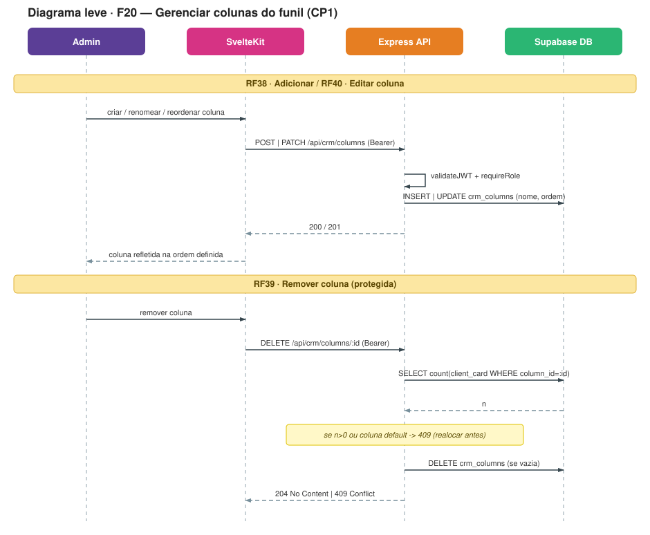
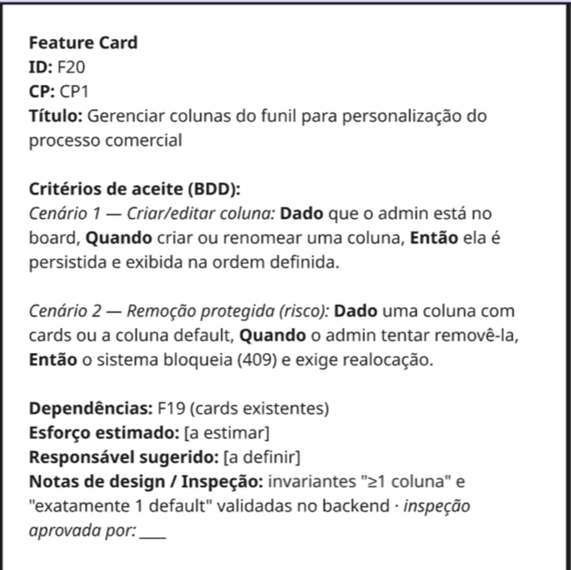
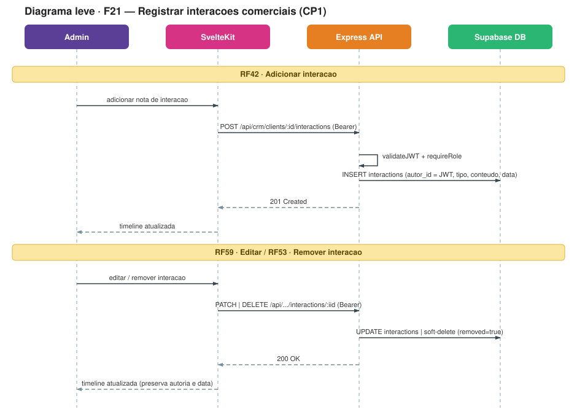
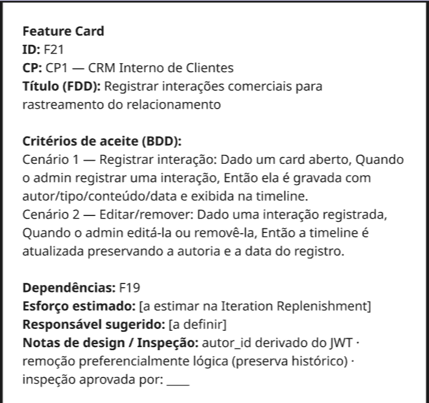
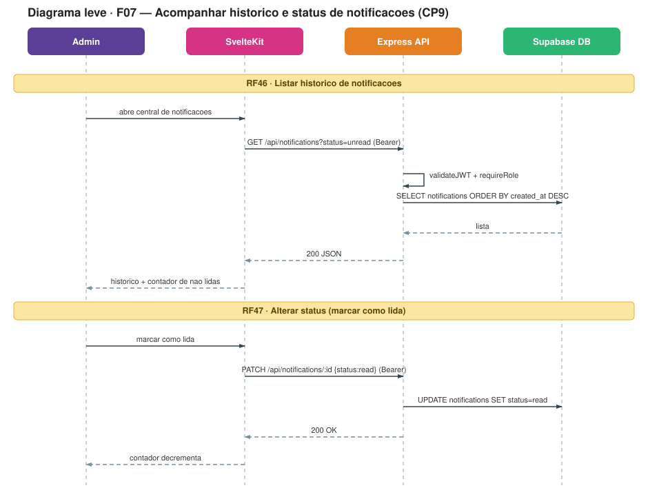
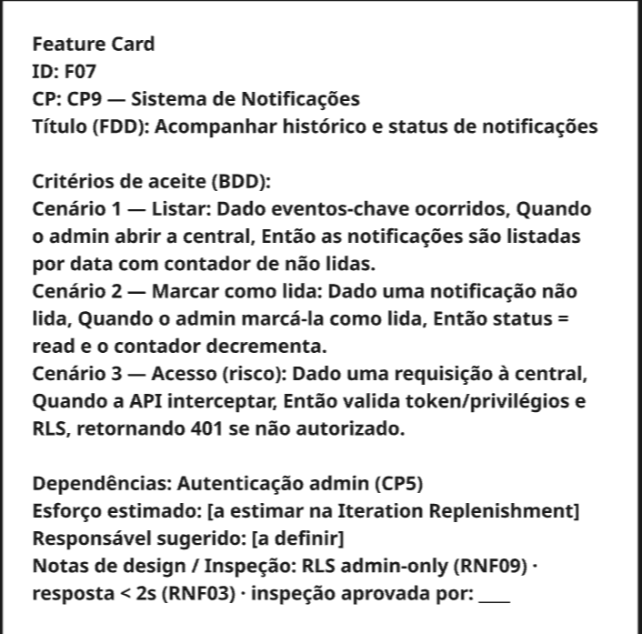
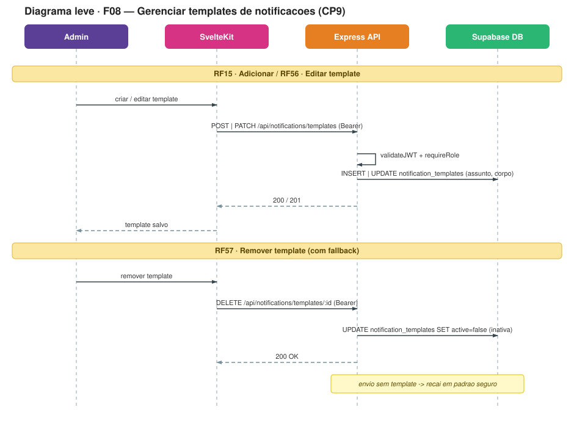
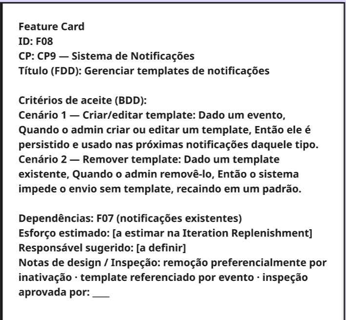

IT2 — Design Técnico¶
Histórico de Revisão¶
| Versão | Data | Descrição | Autor(es) |
|---|---|---|---|
| 1.0 | 15/06/2026 | Criação do documento com artefatos do TDR da IT2 | Heitor Macedo Ricardo |
Artefatos produzidos durante a fase de Technical Design Review (TDR) da IT2, aplicando Formalização Seletiva: diagramas leves e Feature Cards por feature, para mitigar riscos antes do desenvolvimento.
Diagramas Leves e Feature Cards por Feature¶
CP1 — CRM Interno de Clientes¶
F19 — Gerenciar clientes e leads para organização do relacionamento comercial¶
Diagrama Leve

Feature Card

F20 — Gerenciar colunas do funil para personalização do processo comercial¶
Diagrama Leve

Feature Card

F21 — Registrar interações comerciais para rastreamento do relacionamento¶
Diagrama Leve

Feature Card

CP9 — Sistema de Notificações no Sistema¶
F07 — Acompanhar histórico e status de notificações¶
Diagrama Leve

Feature Card

F08 — Gerenciar templates de notificações¶
Diagrama Leve

Feature Card
